> # UCC_2000.mws
A Prime For The Millennium -
primality testing with particular emphasis
on Henry Cabourn Pocklington (1875 - 1952)
A talk given to the student mathematical society of
University College Cork on Thursday 23rd. March 2000
John Cosgrave, St. Patrick's College,
Drumcondra, Dublin 9, IRELAND.
John.Cosgrave@spd.ie
http://www.spd.dcu.ie/johnbcos
For
T
im
and
M
airead Robinson of
F
olding
L
andscapes
(http://www.iol.ie/~tandmfl)
whose idea it was to publish
A Prime For The Millennium
(an explanatory email to my niece Jo and nephew Ben)
I have adopted, as the title of my talk tonight, the title of my recently published booklet
A Prime For The Millennium
(my royalties for the Irish Cancer Society). This booklet began its life as an email written to my young niece and nephew, Jo and Ben Hartley. Just how that private email came to pass into the public domain as a booklet may be read about in the Millennium
prime booklet section of my web site. How a painting by
Tom Marine
(a Leeds-based artist) of the booklet cover (designed by
Simon Cutts and Tim Robinson
) came to be sold to
Turlough Sheehan
of Consolidated Distribution Systems for the benefit of the Irish Cancer Society and the NSPCC (UK), may also be read about at my web site.
The cover of the booklet - a gif file copied and pasted into
this Maple worksheet - is best viewed in the html version:
I wish to thank
Turlough Crowe of Allied Irish Banks,
Elaine Bragg of Adept Scientific
(http://www.adeptscience.co.uk),
Charlie Hipwell of Pfizer
, and
Gerry McGovern of Nua
(http://www.nua.ie) who generously sponsored copies of the booklet for distribution this evening.
Anyone reading this abroad (or here in Ireland) may obtain a copy (or copies!) by contacting Folding Landscapes at their web site (http://www.iol.ie/~tandmfl). There was a print run of 2000, so hurry hurry while stocks last! Of public reaction to the booklet I was especially pleased with an email forwarded to me by Tim Robinson last December 23rd:
Dear Tim Robinson,
>
>As a mother of two small kids you would think (quite rightly)
>that I would be mad busy on the eve of Christmas Eve; well
>since we found the time from nowhere to greet the dawn at
>Newgrange on Tuesday I thought I would steal some time
>to read your beautiful publication 'A Prime For The Millennium'
>which I bought for my brother-in-law who is a number whiz..
>
>What a delight; I thought that I was numerically illiterate
>but I saw the poetry in John Cosgrave's work. If I was a
>number I would definitely want to be a Prime. Please convey
>my thanks to him for his enthusiasm; I now have something
>numerical to feed my babies with when they are older.
The MapleV5 file of this talk may be accessed in the Public and other lectures section of my web site. The
html
text version of that file - for anyone who doesn't have Maple - may also be accessed (note that because Maple saves outputs and in-line mathematical expressions as gif files, then there are hundreds of gif files in the html version).
The futility of Eratosthenes' method.
A technical preliminary (
modular exponentiation
).
Fermat's (1601 - 1667) 'little' theorem. Identifying composites. Pseudoprimes. A moral.
The modern study of
primality proving
starts with Edouard Lucas (1842 - 1891).
D. H. Lehmer and John Selfridge.
H. C. Pocklington (1870 - 1952) again.
Appendix 1. The factors of
.
Appendix 2. John Selfridge's improvement of D.H. Lehmer's 1927 result.
Appendix 3. Francois Proth. (1852 - 1879).
Appendix 4. Other examples of Euclid-Pocklington primes.
Recommended reading.
In my talk I may not get to cover all that I would like, I may have to cut some corners, but you can always look up the full text version at my web site. My ambition is to give you a flavour of what is at stake; it is not possible to cover anything other than a small fraction... .
Introduction to Pocklington. On January 7th. 1999 - in the course of preparing some work to illustrate the
power
of some ideas due to
Henry Cabourn Pocklington
(from a 1914-16 paper of his) for my 3rd. year students in connection with my Number Theory and Cryptography course - I happened to find a prime number with exactly 2000 digits (I dubbed it a
millennium
prime). The size of that prime is not especially significant (though it
would have been
the largest known prime in early 1963); there are, in fact,
rather a lot
of primes with 2000 digits: the exact number of such primes happens to be unknown, but it is of the
order
of 1.9542*
(expressed another way, the probability of a randomly chosen 2000-digit number being prime is about 1 in 455)
.
Two things are of interest about this prime:
1. the
way
in which it is constructed. It is the number:
 *...*
+ 1, namely, the
product
of the
first 325 primes
(2, 3, 5, 7, ... , 2153) and
the 325th power of the 326th prime
(2161),
plus 1
.
*...*
+ 1, namely, the
product
of the
first 325 primes
(2, 3, 5, 7, ... , 2153) and
the 325th power of the 326th prime
(2161),
plus 1
.
2. that its primality
can
be established so readily (there is currently no fast
general
way to establish primality for primes of large size, and the quest for - or proof of the non-existence of - a '
polynomial time algorithm
' to establish primality is
the
great unsolved problem of primality testing) by Pocklington's method. (Indeed for prime numbers of a
certain structure
, Pocklington's method is
vastly superior
to other later methods.)
Here it is :
>
millennium_prime :=
product(ithprime(k), k=1..325)*ithprime(326)^325 + 1;


> length(millennium_prime);

So, let U be the product of the first 325 prime, F be the 325th power of the 326th prime, and , then n is a 2000-digit prime.
> U := product(ithprime(k), k=1..325):
> F := ithprime(326)^325:
> n := U*F + 1:
> length(n);

> isprime(17);

> isprime(21);

>
I am not executing the command 'isprime(n)' - to attempt to establish the primality of the above 2000-digit
n
- for two reasons:
1. it would take Maple far too long (hours, possibly, depending on the speed of the computer being used) (and in this respect, and in many others, the
free
program PrimeForm - created by Chris Nash, and based on the library of Yves Gallot's remarkable Proth program - is
vastly superior
,
2. using Maple, the output could not be relied upon (because Maple - in common with
all other
commercial mathematical software - uses a
probabilistic method
for testing primality, and is only reliable for numbers with up to about 400 digits)
How can the above number be
proved
to be prime using Pocklington's theorem(s)? What, in fact, is (are) Pocklington's theorem(s)? Here, to start with, is a version of
Pocklington's theorem
in its simplest form
(a full working through of Pocklington's analysis may be found in the 3rd year part of the Maple section of my web site):
Let
('
U
' for '
unfactored
', meaning that
one doesn't
need
to know
its actual factorisation - this is a very significant point: many earlier and later methods
required knowing
the
complete factorisation
of
 as a preliminary step to possibly establishing the primality of
n
), where
as a preliminary step to possibly establishing the primality of
n
), where
1.
 is a prime power
is a prime power
2.
U
is a natural number with
p
not dividing
U
, and
3.
then
n
is prime if
Condition 1 (the Fermat-Lucas condition)
there is
some
integer
a
such that
![[Maple Math]](images/UCC_200033.gif) (mod
n
) (
meaning
- for those of you not familiar with
congruences
- that
(mod
n
) (
meaning
- for those of you not familiar with
congruences
- that
![[Maple Math]](images/UCC_200034.gif) leaves remainder 1 when divided by
n
, and
leaves remainder 1 when divided by
n
, and
Condition 2 (what I would like to call Pocklington's condition)
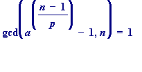
(where
is the greatest common divisor of
A
and
B.
)
Some comments
. For a novice these conditions
might appear
strange, but - as with all things - with some background they are entirely natural. Of course, the second condition
could
appear useless since - again, for a novice - one
might
think that the finding of the gcd
should
entail
more work
than is neccessary to establish primality; but one
must
realise that in practice the gcd is computed
not
by finding
all
divisors of
![[Maple Math]](images/UCC_200037.gif) and
n
(which in any case would mean that one would have established whether or not
n
had any factors other than
1 and
n
),
but
rather by using the remarkable (and entirely elementary)
Euclidean algorithm
and
n
(which in any case would mean that one would have established whether or not
n
had any factors other than
1 and
n
),
but
rather by using the remarkable (and entirely elementary)
Euclidean algorithm
An illustrative example
. I will demonstrate how Pocklington's theorem establishes that 5347 is prime.
Note
. I will include some unneccessary calculations just to let you see the size of the numbers involved.
A Pocklington demonstration that 5347 is prime
: 5347 = 22*
, so
 is
, and
U
is 22.
is
, and
U
is 22.
> n := 22*3^5 + 1;
>
We will start by trying
 , and test Condition 1:
, and test Condition 1:
> 2^(n-1);

> 2^(n-1) mod n; # computes the remainder on division by n

>
Now to test Condition 2:
> 2^((n-1)/3) - 1;
> igcd(2^((n-1)/3) - 1, n);
>
is no use , since it is ' n ' itself . Now we try using :
> 3^(n-1);
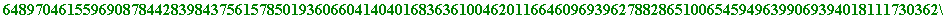
> 3^(n-1) mod n; # computes the remainder on division by n

Now to test Condition 2:
> 3^((n-1)/3) - 1;

> igcd(3^((n-1)/3) - 1, n);

>
which establishes the primality of 5347 by Pocklington's theorem.
I will return to Pocklington later, but first a big step backwards in time, to the classic elementary test of Eratosthenes.
> 2^57171 mod 797979; # computes the remainder 2 to the power of 57171 leaves on division by 797979
>
I would like to point out how remarkable - relatively speaking - a computation that was!!
To perform it, Maple
actually evaluated
 , and
then
divided by 797979 to produce the remainder 70715.
, and
then
divided by 797979 to produce the remainder 70715.
And here is the
actual value
of
(a 17211 digit number):
> 2^57171;
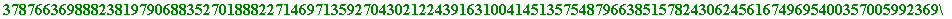

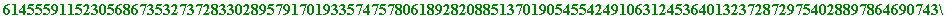
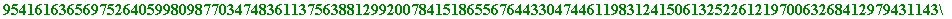
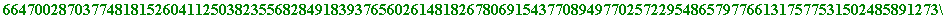

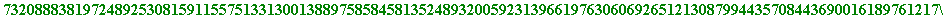
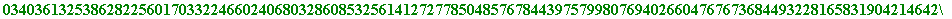


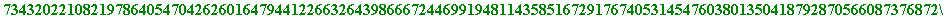


>
However I will soon wish to carry out modular exponentiation computations involving
much larger numbers
, computations like these:
![[Maple Math]](images/UCC_2000263.gif) mod
n
, (
, ... ) and
quite large
values of
n
.
mod
n
, (
, ... ) and
quite large
values of
n
.
For example:
> a := 2;
> n := 98765432123456789876543211111111111111111111111111;
> a^(n-1) mod n;
Error, integer too large in context
>
However there is a very elementary, but incredibly powerful method (known as the square-and-multiply method) which enables such calculations to be done extremely quickly, and here is the Maple command for the above computation to be done:
> a&^(n-1) mod n;
>
You will see shortly
why
such computations are so vital (and, incidentally, see - instantly, and remarkably - that as a result of the just performed computation we may conclude that
is
not
prime).
[Remark. Maple's apparent speed of modular exponentiation is completely outclassed by much more powerful (and free!) programs as
Yves Gallot's Proth.exe
, or
Chris Nash's related PrimeForm
.]
> p1 := 71; # a small prime
> 103^(p1 - 1);
> 103&^(p1 - 1) mod p1;

> 2&^(p1 - 1) mod p1;

> 10&^(p1 - 1) mod p1;

> 142&^(p1 - 1) mod p1;

>
(I hope you see why that '0' appeared.) Now I would like you to see how Fermat's 'little' theorem may be used to quickly establish that a number is composite (i.e., is not prime). I will deliberately make up a number which is not prime, by multiplying two large primes together (the resulting number could not be quickly shown to be not prime by using the method of Eratosthenes):
> p2 := nextprime(9876543009887765498720);
> q2 := nextprime(10000*p2 + 999999999999999);
> n2 := p2*q2;
>
and then the instantaneous computation:
> 2&^(n2 - 1) mod n2;
shows that n2 is not prime. You see why?
In fact a
non unity output
will
almost certainly
result from (almost!) any large
random
choice (the probability of a large random number being prime is quite small; that's an interpretation of the Prime Number Theorem). In the saved text I can only have one 'choice' shown, but during my live lecture I will re-execute the the 'rand' commands to see a few different 'choice' values (this cannot be reproduced by someone having only the html version):
> ?random
> rand();
> rand();
In the following - where there are five different random numbers being used - the coefficients c1 and c2 are simply to ensure (and you see how?) that 'choice' is not divisible by any prime from 2 to 97 (the 25th prime):
> c1 := product(ithprime(k), k=1..25);
> c2 := c1^2;

> choice := c1*rand()*rand()*rand() + c2*rand()*rand() + 1;
> 2&^(choice - 1) mod choice;
>
and so - as you will see,
almost certainly
- 'choice' is
not prime
(I hope I don't have bad luck on the night!).
[Of course, if we successively re-executed the previous two commands
often enough
we would
eventually
-
almost certainly
- get a second output of '1.' And so? Well, you have to see what's coming up next...]
Now I give another ( not random !) computational example [see Appendix for further details]:
> c := 1195068768795265792518361315725116351898245581;

Let us observe how it fairs with respect to Fermat's little theorem:
> 2&^(c - 1) mod c;

> 3&^(c - 1) mod c;

> 5&^(c - 1) mod c;

> 7&^(c - 1) mod c;

> 11&^(c - 1) mod c;

> 13&^(c - 1) mod c;

Those 1's continue being produced until one reaches:
> 37&^(c - 1) mod c;
>
at which point '
c
' is revealed as being
not prime
. [
See Appendix 1.]
A moral
. The following,
too hasty
converse of Fermat's little theorem is
not
true (it is, of course, obviously not true in the trivial case where
(mod
n
)): Let
n
be a natural number, and suppose
![[Maple Math]](images/UCC_2000297.gif) (mod
n
) for
some
a
, then
n
is prime. [The following is trivially - but uselessly (from a computational point of view it would be far, far worse than Eratosthenes' approach) - true: Let
n
be a natural number (
), and suppose
(mod
n
) for
some
a
, then
n
is prime. [The following is trivially - but uselessly (from a computational point of view it would be far, far worse than Eratosthenes' approach) - true: Let
n
be a natural number (
), and suppose
![[Maple Math]](images/UCC_2000299.gif) (mod
n
) for
all
a
with
(mod
n
), then
n
is prime.] However one should not abandon all hope, and it to Lucas that falls the credit of first obtaining a partial converse of Fermat's little theorem.
(mod
n
) for
all
a
with
(mod
n
), then
n
is prime.] However one should not abandon all hope, and it to Lucas that falls the credit of first obtaining a partial converse of Fermat's little theorem.
![[Maple Math]](images/UCC_2000301.gif) (mod
n
), and
(mod
n
), andthen n is prime. An illustrative example:
> example1 := 29:
> a1 := 2:
> a1^(example1 - 1) mod example1;

> seq(a1^r mod example1, r = 1..(example1 - 2));
>
Those computations show that:
1.
(mod 29), and
2.
none
of
, ... ,
leaves remainder 1 on division by 29
and thus 29 is a prime. However it is obvious that the amount of computation is
worse
that would be required with Eratosthenes!! Lucas observed (in 1878) the following improvement: Let
n
be a natural number, and suppose there is an integer
a
such that
1.
![[Maple Math]](images/UCC_2000310.gif) (mod
n
), and
(mod
n
), and
2.
 (mod
n
) for all
divisors
r
of (
(mod
n
) for all
divisors
r
of (
 ) with
) with
 <
<

then n is prime. An illustrative example:
> example2 := 83:
> a2 := 2:
> with(numtheory): # needed for 'divisors'
> S := divisors(example2 - 1);
> Test := S minus {example2 - 1};
> a2^(example2 - 1) mod example2;

> seq(a2^r mod example2, r = Test);
>
Those computations show that:
1.
(mod 83), and
2.
none
of
leaves remainder 1 on division by 83
and thus 83 is prime. It is obvious, of course, that the improvement is significant only when
 has a small number of divisors. It would be futile to use it to establish the primality of - for example - the 8-digit prime (11! + 1):
has a small number of divisors. It would be futile to use it to establish the primality of - for example - the 8-digit prime (11! + 1):
> 11! + 1;
since 11! has 540 divisors:
> divisors(11!);
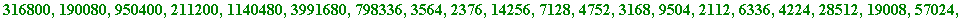

>
A really great improvement later came with D.H. Lehmer (though Kraitchik seems to know the result, but with no stated proof...). It is a mystery to me that Lucas missed it.
![[Maple Math]](images/UCC_2000350.gif) mod
n
, and
mod
n
, and
then
n
is prime.
In short
, D.H. Lehmer's theorem means that one
need only be concerned with
those divisors of
 that are of the form
that are of the form
![[Maple Math]](images/UCC_2000353.gif) , as
, as
 varies over the prime factors of
varies over the prime factors of
 .
This is a really significant, and computationally serious advance
.
.
This is a really significant, and computationally serious advance
.
An illustrative example (which shows the strengths and weaknesses of Lehmer's theorem)
. I'll use Lehmer's theorem to establish the primality of
 , where the prime divisors of
are 2, 3, 5, 7 and 11:
, where the prime divisors of
are 2, 3, 5, 7 and 11:
> N := 11! + 1;
> 47&^(N-1) mod N;

> 47&^((N-1)/2) mod N;

> 47&^((N-1)/3) mod N;

> 47&^((N-1)/5) mod N;
> 47&^((N-1)/7) mod N;
> 473&^((N-1)/11) mod N;
>
While that looks impressive, I have bypassed a lot of fruitless earlier computations (smaller a 's than '47'). Other, better examples may be seen in the 3rd year section of the Maple section of my web site. Also, I have moved to an appendix John Selfridge's 1967 valuable improvement of D.H. Lehmer's 1927 theorem.
> f := n -> product(ithprime(k), k=1..n)*ithprime(n+1)^n + 1;
> f(1);

> f(2);
> f(3);

> f(100);

>
It is explained in simple language in my booklet what I did, but here I just remark that what I needed to do, to identify primes in the above sequence, was to first identify some candidates for primality (meaning ones that at least passed the first hurdle of the Fermat-Lucas test to the base 2):
>
candidates := proc(m, n) local k;
for k from m to n do
if 2&^(f(k)-1) mod f(k) = 1
then print(k, f(k))
fi od end:
> candidates(1, 30);
>
And thus, out of the first 30 of the above numbers, the 1st, 2nd, 10th, and 10th are possible primes.
In fact, those four are all prime (the first two - 7 and 151 - can be done by hand!), but, how do we
know
that; how can we
prove
that? Using Pocklington, that is. Let's have a look at the 3rd of them, the 25 digit
> f(10);

and just to let you see :
> ifactor(f(10) - 1);
>
We already have that
(mod
), and so, using Pocklington, the primality of
 would be established if we
also
had that
. Now, the computation of the gcd of two numbers - even really large ones - is a
fast computation
(this is part of the greatness of the
Euclidean algorithm
):
would be established if we
also
had that
. Now, the computation of the gcd of two numbers - even really large ones - is a
fast computation
(this is part of the greatness of the
Euclidean algorithm
):
> igcd(10^200 + 84, 10^150 + 14);
> igcd(100! + 8765432, 10^150 + 13);

>
So, let's calculate:
> igcd(2^((f(10) - 1)/ithprime(11)) - 1, f(10));
Error, integer too large in context
>
Which integer is "too large"? It's the
![[Maple Math]](images/UCC_2000389.gif) . That number (easy exercise) has
more
than ten thousand, million, million, million digits!! And Maple can only handle integers up to
about
500,000 digits. (And that's just for f(10); the millennium prime is f(325)). So, what can one do? To our rescue comes the Euclidean algorithm, the
key step
of which is the utterly elementary - but oh! so incredibly powerful result! - that if
A
and
B
are any two whole numbers, then
, where
R
is the integer obtained from
A
by dividing it by
B
, as in:
, where
Q
is the 'quotient', and
R
is the 'remainder'.
. That number (easy exercise) has
more
than ten thousand, million, million, million digits!! And Maple can only handle integers up to
about
500,000 digits. (And that's just for f(10); the millennium prime is f(325)). So, what can one do? To our rescue comes the Euclidean algorithm, the
key step
of which is the utterly elementary - but oh! so incredibly powerful result! - that if
A
and
B
are any two whole numbers, then
, where
R
is the integer obtained from
A
by dividing it by
B
, as in:
, where
Q
is the 'quotient', and
R
is the 'remainder'.
In particular it means that the value of
![[Maple Math]](images/UCC_2000392.gif) may be obtained by computing the remainder that
leaves on division by f(10):
may be obtained by computing the remainder that
leaves on division by f(10):
(and the Maple command for
that
is the modular exponential one: 2&^((f(10) - 1)/ithprime(11)) - 1 mod F(10) )
thus obtaining:
> igcd(f(10), 2&^((f(10) - 1)/ithprime(11)) - 1 mod f(10));

>
Instantly, and proving that f(10) is prime.
> igcd(f(20), 2&^((f(20) - 1)/ithprime(21)) - 1 mod f(20));

which proves that f(20) is prime. Returning to my search of last January 1999 I continued looking for candidates, and checking bit by bit up to f(180) these were the outputs (to re-execute them you must first delete the comment sign ' # ' before 'candidates'):
> # candidates(31, 60); # no output
> # candidates(61, 120); # no output
> # candidates(121, 180); # here just one output, '173'
> length(f(173));
>
and applying Pocklington to f(173) it turned out to be prime, and I might have stopped at that point but decided to plough on as my ambition then was to find - if there was one! (it was quite possible that there might not have been another one) - a Euclid-Pocklington prime with at least 1000 digits (any prime with at least 1000 digits is known as a
titanic
prime, and its finder is entitled to be called a
Titan
; it's just a bit of fun.)
Well, you have probably guessed the outcome: the first candidate after f(180) turned out to be f(325) (the '325' was the output from 'candidates(301, 330)'). Then the Pocklington condition was satisfied, proving that f(325) was prime, and then, checking to see how many digits it had, it happened to be exactly 2000.
>
Here is the structure of the number 'c' from within the Fermat section:
> n := 1195068768795265792518361315725116351898245581;
> p := 24444516448431392447461;
> q := 48889032896862784894921;
> is(n = c);

>
John Selfridge's theorem of 1967. Let
![[Maple Math]](images/UCC_2000403.gif) ...
...
 , where the
, where the
 , ... are distinct primes, and suppose for
each
i
there is an integer
(which may or may not vary as i varies, though in practice it does - it is this freedom that makes it superior to Lehmer's theorem) such that:
, ... are distinct primes, and suppose for
each
i
there is an integer
(which may or may not vary as i varies, though in practice it does - it is this freedom that makes it superior to Lehmer's theorem) such that:
1.
(mod
n
) (i.e.
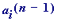
leaves remainder 1 on division by
n
;
in other words, suppose "
n
passes the Fermat-Lucas test to the base
a
"]
2.
(mod
n
) (i.e.,
![[Maple Math]](images/UCC_2000410.gif) does
not
leave remainder 1 on division by
n
)
,
does
not
leave remainder 1 on division by
n
)
,
then
n
is prime. And here, for example, is the primality of 11! + 1 established using Selfridge:
> N := 11! + 1;

First fix a at 2 to see:
> 2&^(N-1) mod N;

> 2&^((N-1)/2) mod N; # need to try another 'a'

> 2&^((N-1)/3) mod N;
> 2&^((N-1)/5) mod N; # need to try another 'a'

> 2&^((N-1)/7) mod N;
> 2&^((N-1)/11) mod N;
>
> 3&^(N-1) mod N;

> 3&^((N-1)/2) mod N; # need to try another 'a'

> 3&^((N-1)/5) mod N;
>
> 13&^(N-1) mod N;

> 13&^((N-1)/2) mod N;
>
That last, non-unity output, finally establishes the primality of
. Other examples of Selfridge's theorem may be viewed in the 3rd year section of the Maple section of my web site.
Appendix 3
Francois Proth (1852 - 1879)
Francois Proth - a self taught French farmer - was the first mathematician to discover a wide ranging primality test for a natural number
n
that
did not require
knowing the
complete factorisation
of
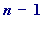
. Since his test is something that featured prominently in my earlier talk this afternoon ("Could there exist a sixth Fermat prime? I believe it is
not impossible
"), then I do not intend saying very much about it here, except to record it, and point out its relation to Pocklington's theorem.
The usual statement of Proth's (Dec. 1878) theorem (I keep the notation as close as possible to the already seen simplest form of Pocklington's 1914-16 theorem). Let
where
U
is odd and
. Suppose there is an integer
a
such that:
![[Maple Math]](images/UCC_2000427.gif) (mod
n
),
(mod
n
),
then
n
is prime.
Comment
. The principal point of interest is that one
need not know
the actual factorisation of
U
, though in practice one usually experiments with small (and thus entirely
known
) odd values of
U
.
I have two very personal reasons for being grateful to Proth:
1. Early in 1999, while attempting to simplify the statement and proof of Proth's theorem to present to my 3rd year students, I rediscovered a little known
unification of Mersenne and Fermat numbers
. That was one of the most satisfying times in my mathematical life, and formed the basis of my talk earlier this afternoon.
2. Between July 23rd and 25th 1999, and using
Yves Gallot
's remarkable Proth.exe program, I was the lucky discoverer of the then (and still) largest known composite Fermat number
![[Maple Math]](images/UCC_2000428.gif) , by finding that it had the 115130-digit prime factor 3*
, by finding that it had the 115130-digit prime factor 3*
 . You may read all about that in the Fermat number record section of my web site.
. You may read all about that in the Fermat number record section of my web site.
Other examples of Euclid-Pocklington (or simply Pocklington) type primes.
A very beautiful (because of its structure, and its resistance to a classical primality proof) prime, one with 1031 digits, is the prime
. This number was first identified as a
probable prime
several years ago (in an unpublished paper) by Wilfrid Keller, and was rediscovered by me on March 10th 1999 (see my earlier, afternoon talk), again as a probable prime. For my purposes it was critical that it
be
a prime, and following circulation of a note about it to about 35 mathematicians I received a note from Francois Morain on March 25th 1999 that a two day computation by him - using the elliptic curve method - had resulted in its primality being established. This prime has been dubbed the 'Keller-Cosgrave-Morain' prime
> KCM := (2^(59^2) - 1)/(2^59 - 1):
> length(KCM);
>
Some weeks ago, with this talk in mind, I thought it might be interesting to find a Pocklington-type prime of the form ( ), with , and . Using Chris Nash's PrimeForm program I found a 2613-digit one one with . This prime is especially interesting since the number U is currently unfactored.
> p := (KCM - 1)*3^3316 + 1:
> length(p);
>
On December 30th 1999, again using Chris Nash's PrimeForm I found the 15756-digit Pocklington type prime
 *...*
.
*...*
.
The general form of Pocklington's theorem. Let
...
 , where the
, where the
 , ... are distinct primes, none of which divide
U
, and
...
, ... are distinct primes, none of which divide
U
, and
...
 .
Then
n
is prime if:
.
Then
n
is prime if:
Condition 1 (the Fermat-Lucas condition)
there is
some
integer
a
such that
![[Maple Math]](images/UCC_2000444.gif) (mod
n
), and
(mod
n
), and
Condition 2
(the general Pocklington's condition)
for all
i
.
An example:
 *...*
*...*
 is a 3318-digit prime.
is a 3318-digit prime.
The literature is vast, and I will keep it brief by saying that anyone wishing to really study this subject would greatly benefit from a reading of Hugh C. Williams' Edouard Lucas and Primality Testing [ISBN 0-471-14852-0], Canadian Mathematical Society Series of Monographs and Advanced Texts, Volume 22, John Wiley & Sons, 1998. Williams' book is a real treasure, and ought to become a classic. I got my copy from Undercover Books (http://www.undercoverbooks.com); please tell Joel Turner (who, with his sister and mother, runs this great company) I told you so.